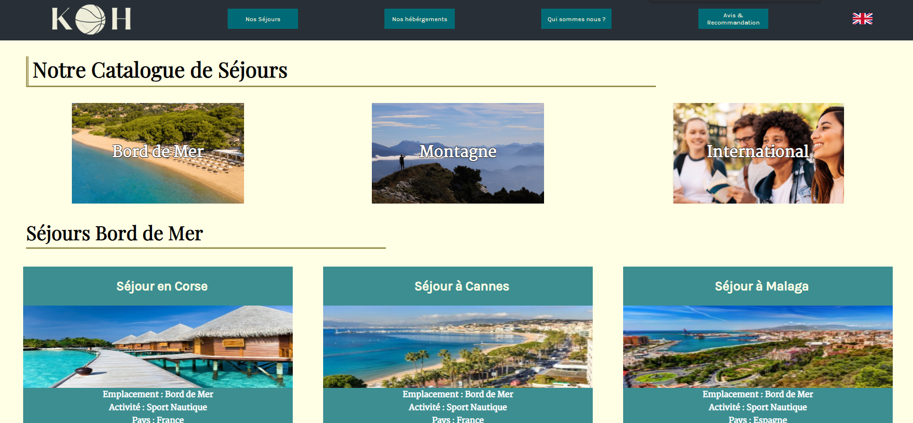
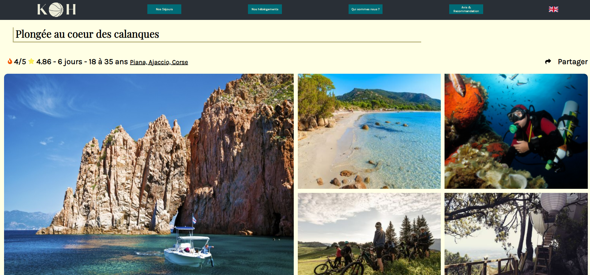
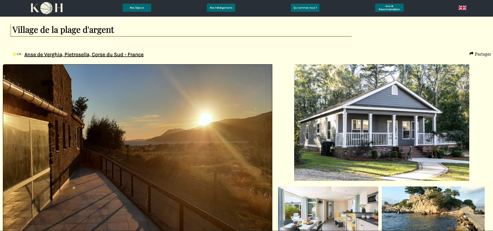
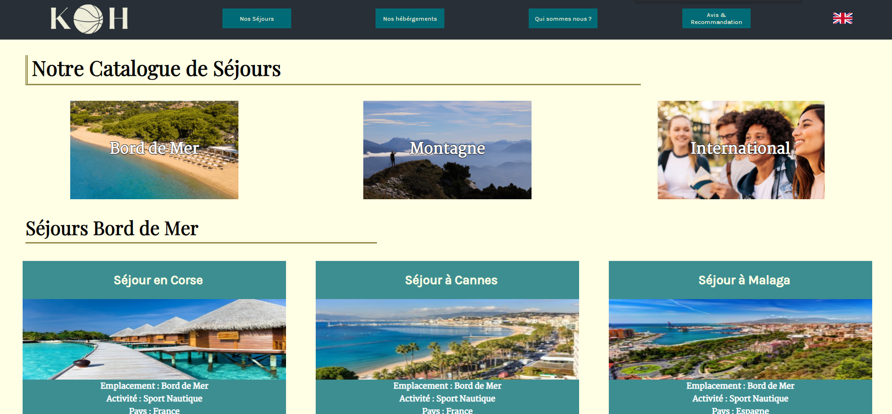
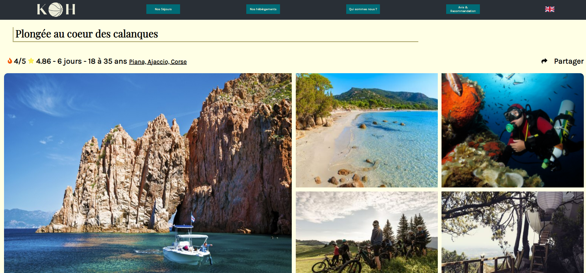
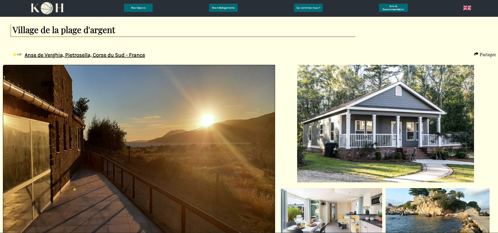

Compétence 5 : CONDUIRE un projet
Sport Koh
Projet réalisé en équipe dans le cadre de la formation de BUT Informatique à l'IUT de Lannion, l'objectif était de réaliser un site vitrine pour une entreprise de séjours sportifs et de découverte. Cette dernière, présente en France avec plus de 40 activités, souhaite se développer à l'international. C'est ainsi pour cette raison que nous avons décidé de réaliser une version du site en Français, qui vise la majorité des clients, mais également une version en anglais pour les clients que cherche à attirer cette entreprise.
Apprentissages critiques du projet :
- AC15.01 : Appréhender les besoins du client et de l'utilisateur
- AC15.02 : Mettre en place les outils de gestion de projet
- AC15.03 : Identifier les acteurs et les différentes phases d’un cycle de développement
Compétences acquises :
- Design (couleurs qui contrastent, couleurs appropriées aux besoins du client)
- Travail en équipe (coordination des différentes pages entre elles)
Technologies utilisées


Etat du projet :
Fini
Images du projet :
 




